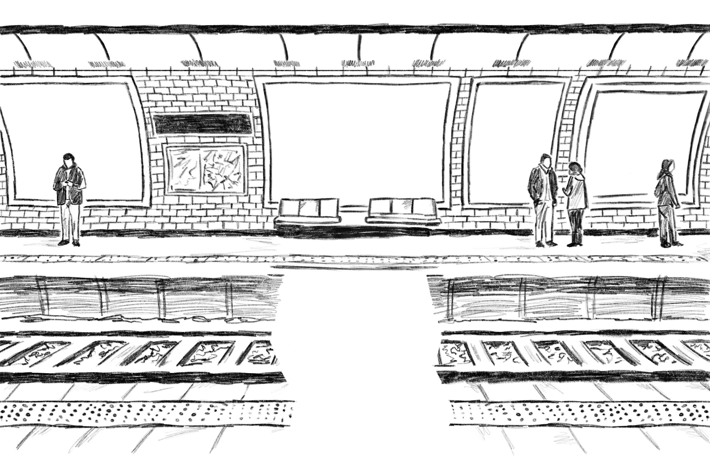
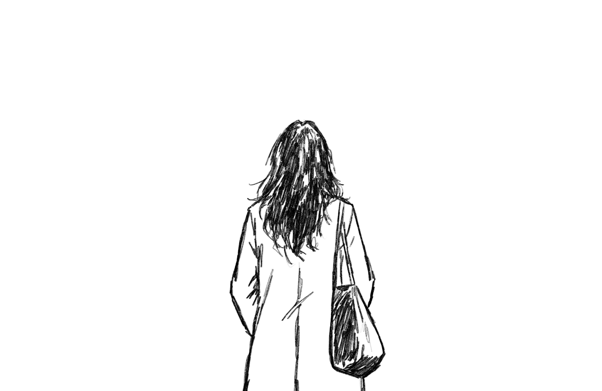

Prends ta place
Une histoire dans le RER B
Cliquer pour commencer
Une histoire dans le RER B


7h52. Sarah monte dans le RER B.
Le wagon se remplit
Sarah s'assoit.
Marie-Louise, 30 ans
Poignardée dans le métro ligne 4, Paris — 2010
Femme, 31 ans — Massy-Palaiseau
Poussée sur les rails du RER B — 2025
3 femmes — Paris
Poignardées dans le métro parisien — décembre 2025
Femme — Station Bel-Air
Happée par la fermeture d'une porte, métro Paris — 2023